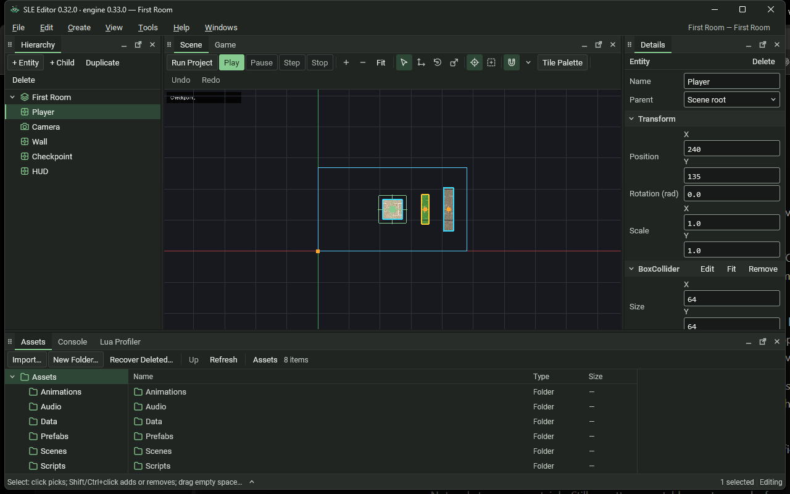

Editor workspace
Open a project to work with its scenes and assets. In the default layout, Hierarchy is on the left, Scene and Game share the center, Details is on the right, and Assets is below. Use the Windows menu to find panels if your layout differs.

Hierarchy
Select an entity by name to edit it. The tree shows parent and child relationships. Select the scene root to edit the scene name in Details. In First Room, the Player and Camera will both be children of the scene root.
Scene
Use Scene to place entities and inspect camera framing. Select a sprite directly in the viewport or choose it in Hierarchy. Middle-drag or Alt+left-drag to pan, scroll to zoom, and use Fit to frame the scene. These controls move the editor view independently of the gameplay camera.
Details
Details follows the selection. Choose Player to edit its Name, Transform, and SpriteRenderer. Choose Camera to change its position and Camera2D settings. During Play, Live Details shows runtime values and authoring edits are locked until you stop.
Assets
Assets shows the files under the open project's asset root. Select a folder before using Import… to copy files into it. To use an imported image, assign it to the sprite's texture field in Details.
Game
Game shows what the active gameplay camera sees. The editor may add bars around the view to preserve the camera's aspect ratio. When you press Play, the editor opens Game and runs a snapshot of the open scene. Click inside Game to give it keyboard and mouse focus. Press Stop to return to editing.